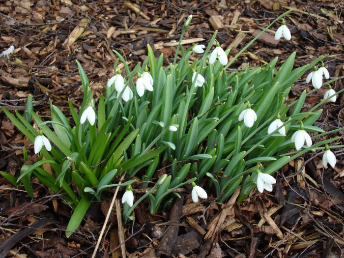

 Scilla (/ˈsɪlə/) is a genus of about 30 to 80 species of bulb-forming perennial herbaceous plants in the family Asparagaceae, subfamily Scilloideae. Sometimes called the squills in English, they are native to woodlands, subalpine meadows, and seashores throughout Europe, Africa and the Middle East. A few species are also naturalized in Australasia and North America. Their flowers are usually blue, but white, pink, and purple types are known; most flower in early spring, but a few are autumn-flowering. Several Scilla species are valued as ornamental garden plants.